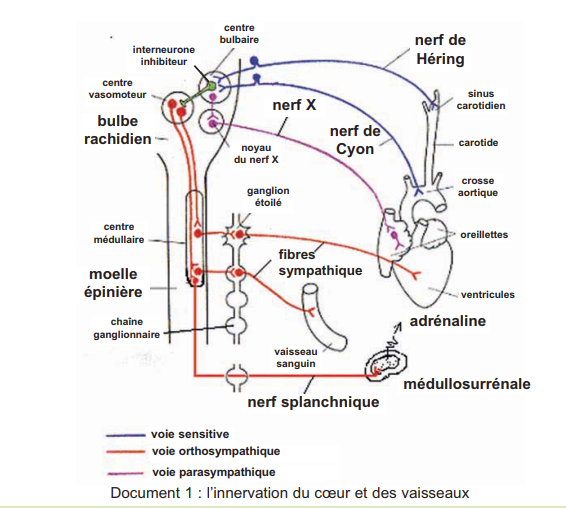
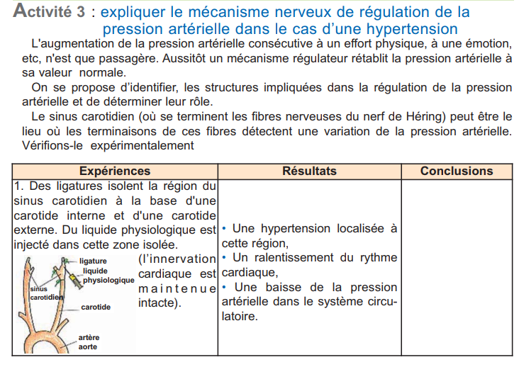
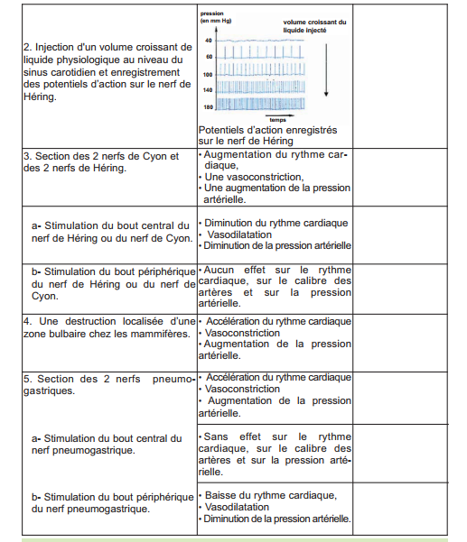
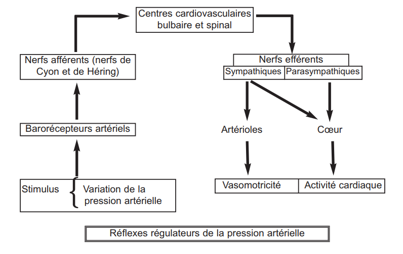

I. Paramètres de la pression artérielle
Définition
La pression artérielle est la pression exercée par le sang sur la paroi des artères. Elle oscille entre une valeur maximale (systolique ≈ 12-13 cm Hg) et une valeur minimale (diastolique ≈ 8 cm Hg).
❤️ Pompe cardiaque
↑ fréquence cardiaque = ↑ PA
↓ fréquence = ↓ PA
🩸 Vasomotricité
↑ calibre vaisseaux (vasodilatation) = ↓ PA
↓ calibre (vasoconstriction) = ↑ PA
💧 Volémie
↑ volume sanguin = ↑ PA
↓ volume (hémorragie) = ↓ PA
II. Innervation cardio-vasculaire
Doc 1 — Innervation du cœur et des vaisseaux
Schéma parasympathique + orthosympathique (p.232)

| Système | Nerf | Neurotransmetteur | Effet cardiaque | Effet vasculaire |
|---|---|---|---|---|
| Parasympathique | Nerf X (pneumogastrique) | Acétylcholine | ↓ rythme (cardiomodérateur) | — |
| Orthosympathique | Nerfs sympathiques | Noradrénaline | ↑ rythme (cardioaccélérateur) | Vasoconstriction |
III. Régulation nerveuse — Les réflexes correcteurs
Doc 2 — Expériences sinus carotidien
Hypertension localisée (p.232)

Doc 3 — Expériences section nerfs
Nerfs de Cyon et Héring (p.233)

📍 Barorécepteurs
- Sinus carotidien (nerf de Héring)
- Crosse aortique (nerf de Cyon)
- Sensibles à l'étirement → codent PA en fréquence
- ↑ PA = ↑ fréquence PA afférents
🧠 Centres bulbaires
- Centre cardiomodérateur (noyau du X)
- Centre vasomoteur (orthosympathique)
- Intègrent les messages des barorécepteurs
⚡ Réflexe hypertension
- ↑PA → ↑barorécepteurs → ↑X → ↓rythme cardiaque
- + inhibition centre vasomoteur → vasodilatation
- → ↓PA (rétrocontrôle négatif)
⚡ Réflexe hypotension
- ↓PA → ↓barorécepteurs → levée inhibition
- → ↑orthosympathique → ↑rythme + vasoconstriction
- + adrénaline (médullosurrénale) → ↑PA
IV. Régulation hormonale et schéma de synthèse
Doc 5 — Schéma régulation PA
Voies nerveuses + hormonales (p.240)

Doc 6 — Synthèse régulation neuro-hormonale
Intégration des mécanismes (p.243)

| Hormone | Origine | Action | Délai |
|---|---|---|---|
| Adrénaline | Médullosurrénale | ↑rythme cardiaque, vasoconstriction → ↑PA | Court terme |
| Angiotensine | Foie (angiotensinogène) + rein (rénine) | Vasoconstriction + ↑aldostérone | Moyen terme |
| Aldostérone | Corticosurrénale | Réabsorption Na⁺ → ↑volémie → ↑PA | Long terme |
| ADH | Posthypophyse | Réabsorption H₂O → ↑volémie → ↑PA | Long terme |
V. Maladies cardiovasculaires et prévention
⚠️ Pathologies
- Athérosclérose : plaques d'athérome dans artères
- Angine de poitrine : rétrécissement coronaires
- Infarctus du myocarde : occlusion coronaire aiguë
- AVC : hémorragie cérébrale par hypertension
🛡️ Prévention
- Alimentation équilibrée (huile d'olive, légumes)
- Activité physique régulière
- Arrêt du tabac
- Gestion du stress
- Contrôle régulier de la PA
Expérience de Lœwi (1921) : Deux cœurs de grenouille perfusés en cascade. Stimulation du nerf vago-sympathique du cœur A → ralentissement de A puis de B. Preuve que la transmission est chimique (acétylcholine libérée dans le liquide de perfusion).